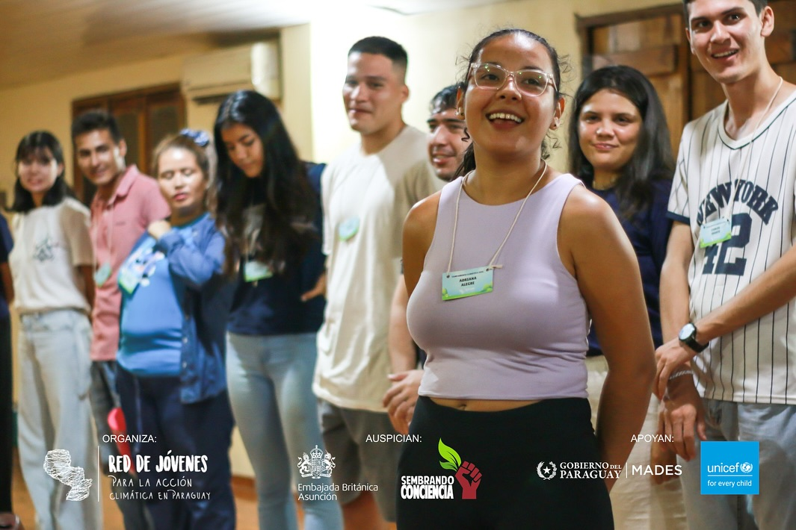
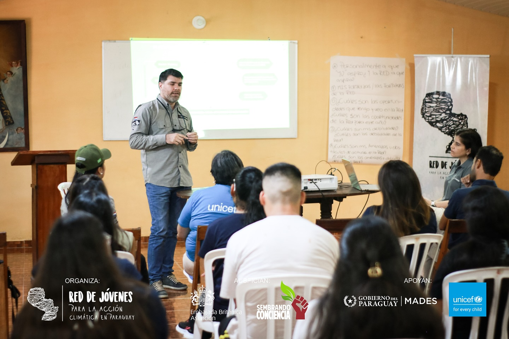
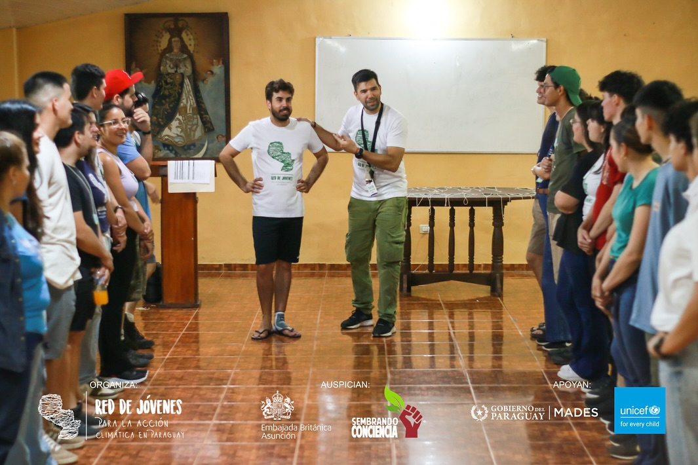
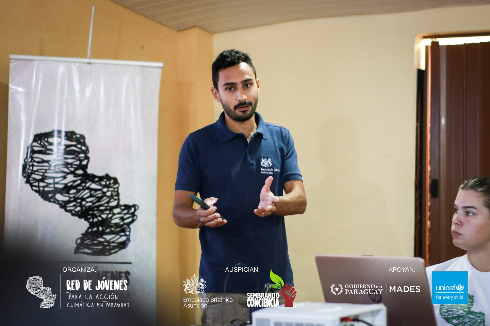

28 de febrero – 3 de marzo de 2025 · Participación comunitaria
Campamento Nacional de la Red de Jóvenes
Del 28 de febrero al 3 de marzo de 2025, la Red de Jóvenes Para la Acción Climática en Paraguay realizó su Campamento Nacional en la Quinta Merlo, en la ciudad de Caacupé. Durante cuatro días, 50 jóvenes provenientes de distintos departamentos del país se reunieron para fortalecer vínculos, intercambiar experiencias y construir colectivamente el plan de trabajo de la Red para el año 2025.
El encuentro contó con el auspicio de la Embajada Británica en Asunción y la participación de Sembrando Conciencia, y con el apoyo del Ministerio del Ambiente y Desarrollo Sostenible (MADES) y UNICEF.

Una red que se construye desde las regiones
La Red de Jóvenes Para la Acción Climática es una iniciativa que conecta a jóvenes de distintas regiones del Paraguay en torno a la acción climática y el compromiso social y ambiental. Al estar distribuida en diferentes departamentos, la red enfrenta el desafío de la distancia geográfica: sus integrantes no siempre tienen oportunidad de encontrarse presencialmente.
El campamento fue precisamente eso: un espacio para que esas distancias se achicaran. La convivencia de cuatro días permitió generar confianza, fortalecer amistades y reafirmar el sentido de pertenencia a una red con un propósito común.

Cuatro días de diálogo, formación y planificación
El programa del campamento combinó tres ejes: la formación, la convivencia y la planificación colectiva. A lo largo de los cuatro días se desarrollaron jornadas de diálogo en las que los participantes compartieron experiencias desde sus propios territorios, identificaron desafíos comunes y propusieron actividades para el año.
Uno de los objetivos centrales del encuentro fue la construcción participativa del plan de trabajo 2025 de la Red. Los jóvenes tuvieron espacio para proponer, debatir y acordar prioridades, fortaleciendo así la coordinación interna y el liderazgo de los propios integrantes.

Educación ambiental, huertas y bienestar
El campamento también incluyó talleres de educación ambiental y huertas urbanas, con actividades orientadas a compartir conocimientos y herramientas que los jóvenes pudieran llevar de vuelta a sus comunidades. Se realizaron además sesiones de yoga y dinámicas de integración que promovieron el bienestar, la convivencia y el vínculo entre los participantes.
La experiencia reafirmó la importancia de crear espacios donde las juventudes puedan organizarse, compartir sus conocimientos y asumir un papel activo en la construcción de comunidades más sostenibles y participativas.
Para Sembrando Conciencia, este campamento representa el tipo de proceso que la organización acompaña desde su fundación: espacios donde los propios jóvenes son protagonistas, donde el conocimiento circula entre pares y donde se construye un compromiso colectivo con el territorio y el ambiente.
Sobre este registro: El Campamento Nacional de la Red de Jóvenes Para la Acción Climática en Paraguay se realizó del 28 de febrero al 3 de marzo de 2025 en la Quinta Merlo, Caacupé. Contó con la participación de 50 jóvenes de distintos departamentos del Paraguay. Fue organizado por la Red de Jóvenes, con el auspicio de la Embajada Británica en Asunción y Sembrando Conciencia, y el apoyo del MADES y UNICEF.